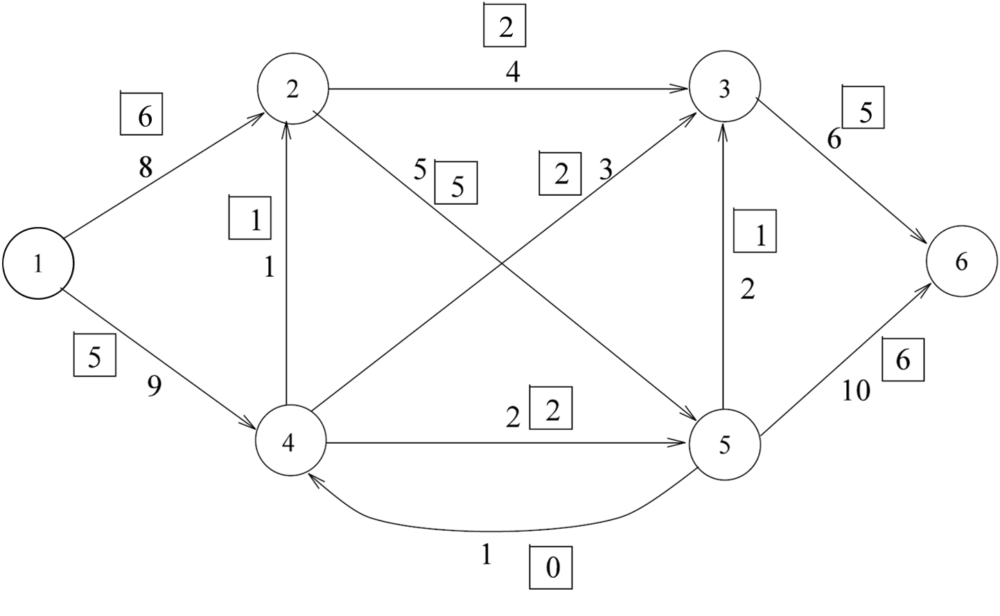
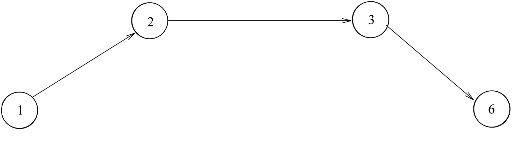
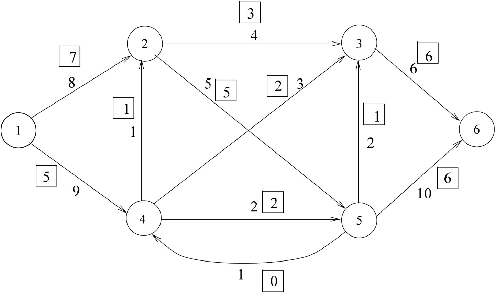
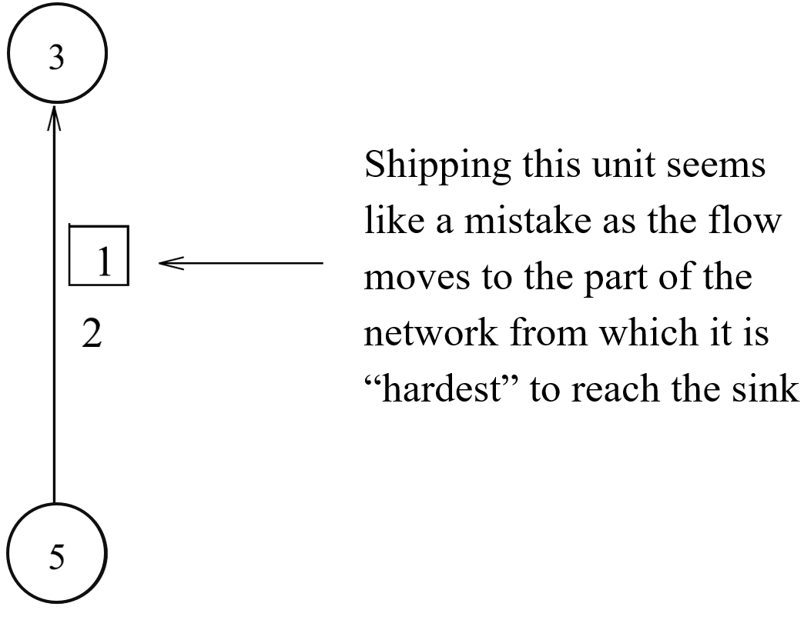
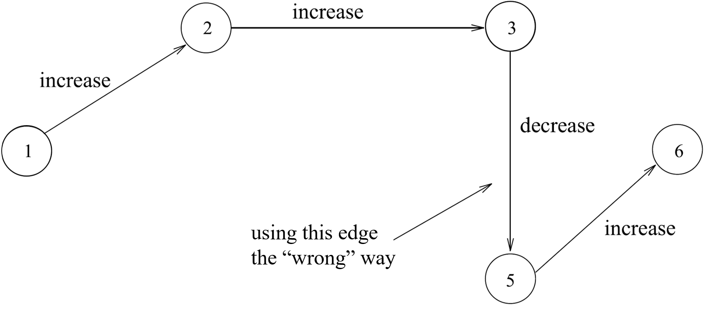
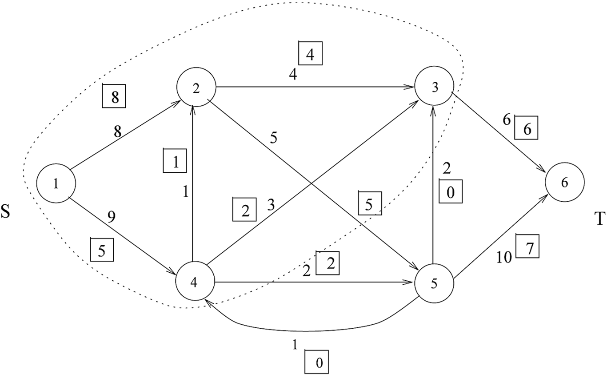

Towards an Algorithm
2.3. Towards an Algorithm#
We will give an algorithm that generates a flow and cut simultaneously, such that the value of the flow is equal to the capacity of the cut; hence, the algorithm not only computes the maximum flow, but also computes something that verifies the optimality of this flow.
But now consider a closely related question. Given a feasible flow, how can you tell (quickly) if the flow is optimal? To answer this question, first consider the following example. In the figure below, the number next to each arc represents its capacity. The boxed number next to each arc specifies a flow value for that arc; this currently shows a feasible flow of value 11.
{kind=link}
Is the boxed flow optimal? No. We can find a path from \(s\) to \(t\)
{kind=link}
such that each arc in this path is not used to its capacity, i.e., each has some residual capacity. In this example, the arcs of the path have residual capacity equal to 2, 2, and 1, respectively. As a result, flow along this path can be increased by 1 unit (that is, the minimum residual capacity on path).
Is the new flow optimal?
{kind=link}
We can make the following observations about the current example.
1. Focus on the following arc:
{kind=link}
2. We can change the current flow not only by increasing the flow on a particular arc but also by decreasing flow on some arcs.
3. Decreasing flow on an arc is like sending flow back (“return to sender”).
Consider the sequence of arcs highlighted in the figure below. Notice that this is not a path in the input graph, since one of the arcs included, \((3,5)\), is not actually an arc in the graph but instead appears in the input in the opposite direction, as \((5,3)\).
{kind=link}
Now we make a crucial observation. Suppose that we change the flow for each of these arcs (where this means we change the flow value for \((5,3)\), not \((3,5)\) since the latter is not an arc in the input) by the same amount \(\delta\). However, we don’t increase the flow by \(\delta\) on each arc; instead, we increase the flow for arcs \((1,2)\), \((2,3)\), and \((5,6)\) and decrease the flow value on \((5,3)\). No matter how we choose \(\delta\), the new flow will satisfy the node flow conservation constraints. (Make sure you try this out and see why this is true!) Of course, we might no longer satisfy the capacity constraints if we set \(\delta\) to be too large.
If we set \(\delta = 1\), then we can use this change to get the following new feasible solution.
{kind=link}
Is this an optimal flow? We have also indicated a cut \((S,T)\), where \(S=\{1,2,3,4\}\) and \(T=\{5,6\}\). The capacity of \((S,T)\) is 13, and since the current flow has value equal to 13, the current flow is optimal.
The current flow \(f\) also has other useful properties. For each arc \((v,w) \in D(S,T)\), we have that
on the other hand, for each arc \((w,v) \in E\), such that \(w \in T, v \in S\) we have that
This will always be true at optimality!